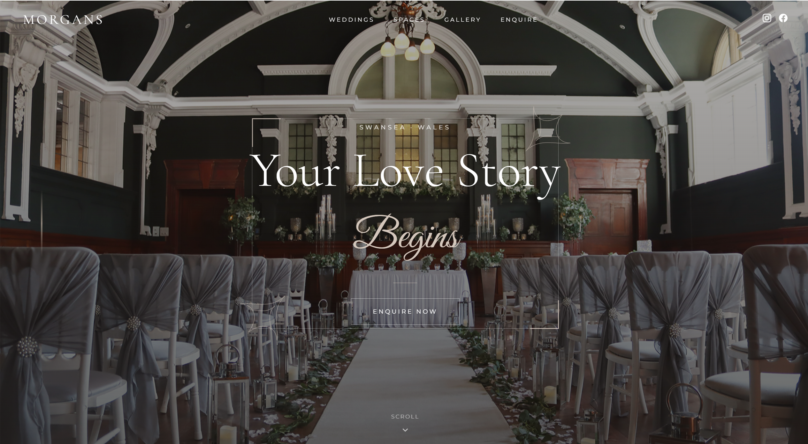

Landing PageWedding Events Page
A dedicated page for couples considering Morgans as their wedding venue. Built to showcase the space, communicate the experience, and drive enquiries — without the friction of navigating the main site.
- Full-bleed photography layout
- Venue details & capacity information
- Clear enquiry call-to-action
- Mobile-first responsive design